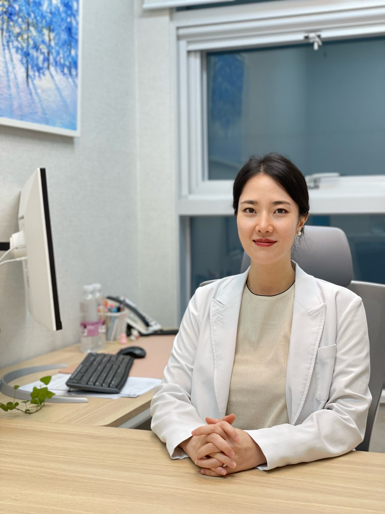
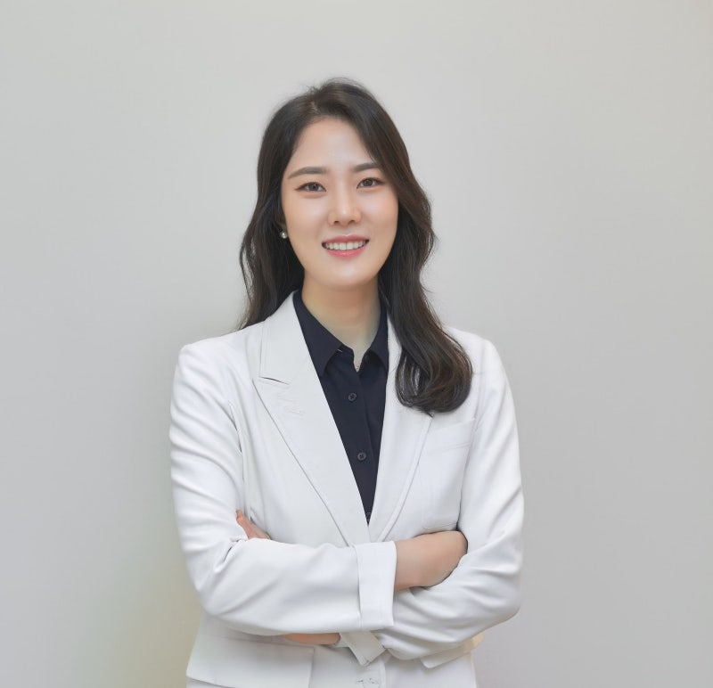
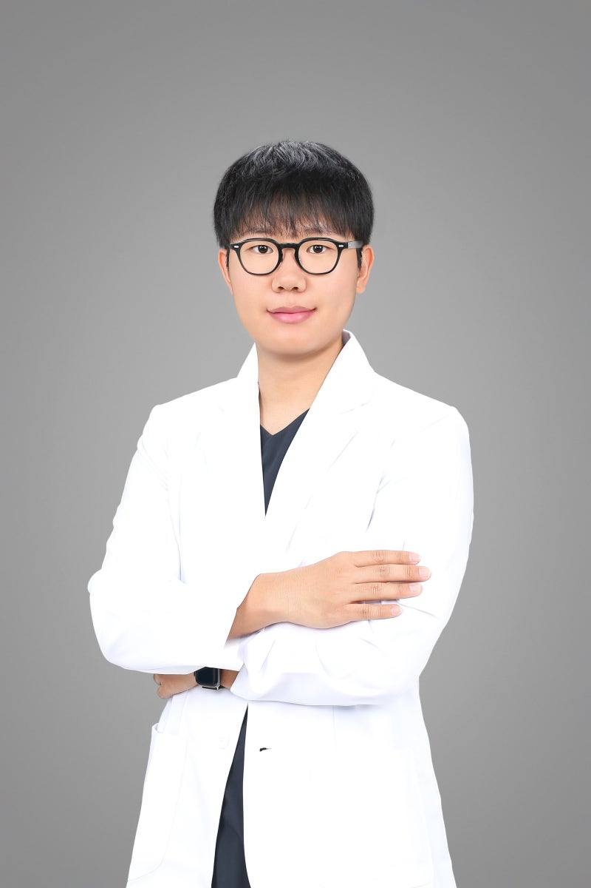

YT 심리발달 아카데미
YT 심리발달 아카데미
10년 임상 현장에서 마주한 깨달음과 치열한 고민으로 세운 YT 심리발달 아카데미의 설립 철학입니다.

YT 심리발달 아카데미 총괄 디렉터 • 10년 차 아동발달 임상 전문가
안녕하세요. YT 심리발달 아카데미 원장 이미지입니다.
10년간 임상 현장에서 수많은 아이들과 부모님들을 마주하며, 치료실 안의 변화가 일상으로 온전히 이어져야 한다는 확신을 갖게 되었습니다.
“치료실 문을 나서는 순간 사라지는 기술은 온전한 변화가 아닙니다.”
진정한 성장은 아이 개인의 교정을 넘어 가정, 학교, 양육 태도까지 주변의 모든 삶의 환경이 유기적으로 통합될 때 비로소 일어납니다.
이 확신 아래 연세나무 소아청소년정신건강의학과 치료실이 독립 연구기관 ‘YT 심리발달 아카데미’로 출범하였습니다. 과학적 근거를 바탕으로 치료, 교육, 상담, 평가, 수련이 결합된 전문 아카데미 시스템을 제공합니다.
실제 학교 규격의 모의 교실 훈련으로 가정과 학교에서의 자립 기술을 체화합니다.
병원 환경에서 심도 있게 다루기 어려웠던 심층 평가, 다학제 치료, 지속적인 부모 코칭을 데이터로 표준화합니다.
온·오프라인 소통을 바탕으로 아이에게 필요한 결정적 순간 현장에서 함께합니다.
과학적으로 입증된 체계적이고 통합된 서비스를 YT 심리발달 아카데미에서 온전히 누리실 수 있도록 정성을 다하겠습니다.
YT 심리발달 아카데미 대표원장 이미지 올림
주간 케이스 컨퍼런스로 치료사 전원이 개별 아동의 목표 달성률을 교차 검증합니다.
주관적 느낌이 아닌 객관적 행동 기록 차트를 통해 아동의 긍정적 변화를 숫자로 투명하게 확인합니다.
가정에서도 일관된 지지가 이어지도록 매회 보호자 브리핑을 진행합니다.
임상 현장에서 검증된 전문성과 학술적 깊이를 갖춘 전문가들이 아이의 발달과 일상 성장을 이끕니다.
[행동분석가 윤리 강령 준수] 행동분석가 윤리 강령에 따라 경력과 임상 자격을 투명하게 공개하며, 정직하고 신뢰할 수 있는 정보만을 전해드립니다.

국제행동분석가(BCBA) • 한국응용행동분석 전문가 1급
10년 임상 경험을 바탕으로 치료실-가정-학교를 하나로 잇는 통합 중재 시스템을 이끌며, 아동의 일상 일반화와 따뜻한 성장을 지원합니다.
한국공인행동분석가(QBA) • 한국응용행동분석 전문가 1급
ABA 조기집중교실을 총괄하며 문제행동 기능평가, 분노 조절, 또래 사회성 코칭 및 데이터에 기반한 정밀 개별 중재를 이끕니다.
국제행동분석가(BCBA) • 한국응용행동분석 전문가 1급
5년 차 검증 노하우의 학교준비반을 이끌며, 초등학교 입학 적응(착석 유지, 교실 지시이행, 자기물건 관리)과 사회성 발달을 밀착 지도합니다.
정규 대학원 전공 및 공인 행동분석 자격을 갖추고 아동의 긍정적 일상 변화를 이끄는 전문 임상 치료사진입니다.
한국공인행동분석가(QBA) • 한국응용행동분석 전문가 1급
아동심리치료 석사 학문적 지식과 공인 행동분석 자격을 결합하여 아동의 긍정적 대체 행동 형성 및 또래 사회기술 습득을 밀착 지도합니다.
한국응용행동분석 전문가 2급 • 인지발달심리 석사과정
인지발달 및 발달장애 심리 전공 연구와 임상 현장 실습을 바탕으로 아동의 인지-행동 발달 단계를 면밀히 관찰하고 맞춤 중재를 제공합니다.

한국응용행동분석 전문가 1급 • 아동심리치료 전공
아동심리치료 전문 수련과 데이터 기반 행동 수정을 결합하여, 가정과 기관에서 지속 가능한 자발적 긍정 행동 레퍼토리를 확장합니다.